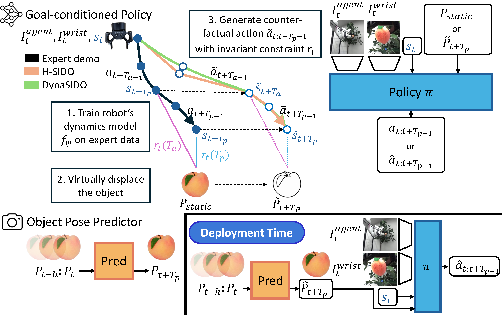
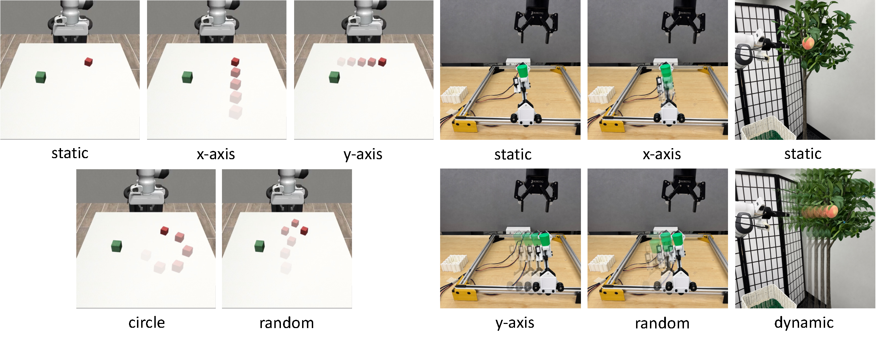
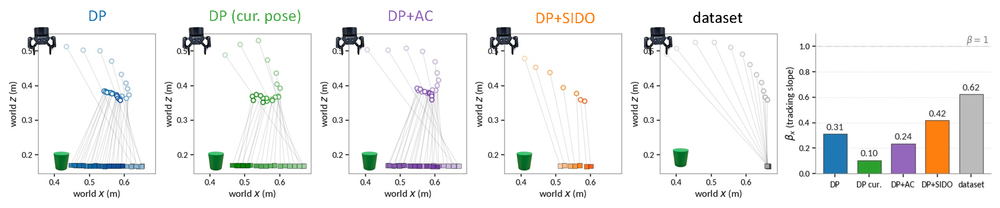
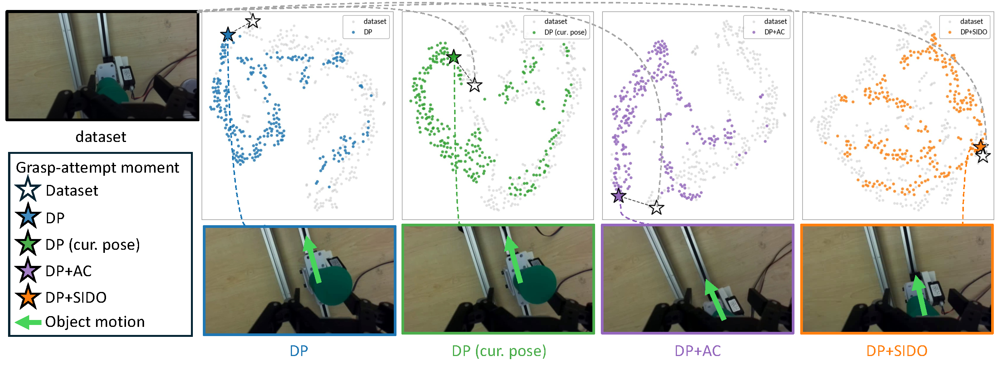
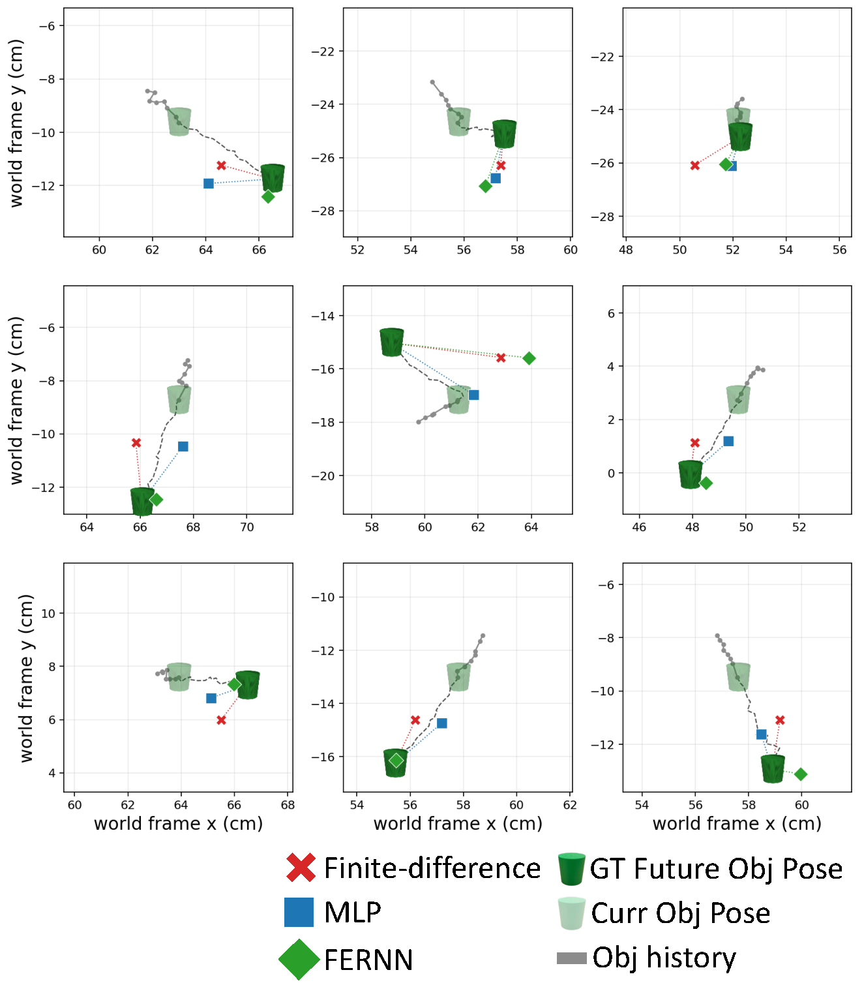

A policy trained on static-object demonstrations fails on moving objects. It reaches for where the object was, not where it will be. SIDO closes this gap with no moving-object data, using counterfactual action augmentation to turn each static demonstration into motion-anticipating supervision. SIDO splits the task into two modules: 1) a goal-conditioned policy trained on the augmented data, and 2) an object-pose predictor that forecasts the object's future position.

For each static demonstration, SIDO samples an object displacement δ, writes the virtually displaced future position into the policy's pose channel, and morphs the action chunk to keep the hand–object relative pose fixed at the displaced target. H-SIDO uses a heuristic ramp, while DynaSIDO refines the counterfactual action chunk with MPPI under a learned dynamics model so the executed trajectory reaches the target. At deployment, any object-pose predictor supplies the future object position.

We test SIDO in simulation (Mug, Square, Stack across five motion patterns) and on two real-world platforms (Gantry, Peachtree), under static and dynamic conditions, 20 rollouts each. To probe policy-agnosticism we apply SIDO to two policy classes, Diffusion Policy (DP) and Equivariant Diffusion Policy (EquiDP). To probe plug-and-play, we swap the deployment object-pose predictor among a finite-difference rule, an MLP, and a flow-equivariant recurrent network (FERNN). Baselines handle motion with the object's current pose (cur. pose) or a test-time action-compensation shift (AC), while SIDO bakes the future displacement into training.
| Method | Mug | Square | Stack | ||||||||||||
|---|---|---|---|---|---|---|---|---|---|---|---|---|---|---|---|
| static | x | y | circ | rand | static | x | y | circ | rand | static | x | y | circ | rand | |
| DP (cur. pose) | 0.20 | 0.10 | 0.00 | 0.15 | 0.15 | 0.60 | 0.00 | 0.20 | 0.15 | 0.20 | 1.00 | 0.15 | 0.40 | 0.35 | 0.65 |
| DP + AC | – | 0.00 | 0.10 | 0.10 | 0.10 | – | 0.30 | 0.00 | 0.35 | 0.20 | – | 0.15 | 0.30 | 0.40 | 0.60 |
| DP + SIDO | 0.25 | 0.35 | 0.20 | 0.20 | 0.30 | 0.60 | 0.50 | 0.40 | 0.40 | 0.55 | 0.95 | 0.90 | 0.65 | 0.65 | 0.95 |
| EquiDP (cur. pose) | 0.35 | 0.35 | 0.05 | 0.05 | 0.15 | 0.60 | 0.10 | 0.05 | 0.05 | 0.10 | 0.95 | 0.35 | 0.55 | 0.25 | 0.65 |
| EquiDP + AC | – | 0.35 | 0.05 | 0.05 | 0.15 | – | 0.05 | 0.00 | 0.05 | 0.20 | – | 0.35 | 0.55 | 0.65 | 0.90 |
| EquiDP + SIDO | 0.50 | 0.10 | 0.05 | 0.00 | 0.00 | 0.60 | 0.20 | 0.10 | 0.20 | 0.20 | 0.95 | 0.70 | 0.70 | 0.75 | 0.95 |
Simulation success rate (↑) on three MimicGen tasks under five motion patterns, 20 rollouts per cell.
| Method | x-axis | y-axis | random | |||
|---|---|---|---|---|---|---|
| static | dyn | static | dyn | static | dyn | |
| DP | 0.90 | 0.10 | 0.85 | 0.35 | 0.80 | 0.15 |
| DP (cur. pose) | 0.80 | 0.35 | 0.95 | 0.50 | 0.90 | 0.20 |
| DP + AC | – | 0.00 | – | 0.30 | – | 0.00 |
| DP + SIDO | 0.80 | 0.55 | 0.95 | 0.65 | 1.00 | 0.25 |
Real-world Gantry success rate (↑), 20 rollouts per cell.
| Method | static | dynamic |
|---|---|---|
| DP | 0.65 | 0.30 |
| DP (cur. pose) | 0.90 | 0.45 |
| DP + AC | – | 0.30 |
| DP + SIDO | 0.75 | 0.60 |
Real-world Peachtree success rate (↑), 20 rollouts per cell.

SIDO's commanded gripper sweeps with the moving object, while the baselines lag behind.

SIDO's wrist views stay within the static training distribution, while the baselines drift away and miss.
| Predictor | SR ↑ | FDE (cm) ↓ |
|---|---|---|
| Finite difference | 0.25 | 2.97 |
| MLP | 0.25 | 2.21 |
| FERNN | 0.40 | 1.77 |
Predictor swap on Gantry (random), policy held fixed.
SIDO is policy-agnostic: it improves moving-object success regardless of the policy class (DP, EquiDP). It is also plug-and-play in the predictor: holding the policy fixed and swapping only the deployment predictor, lower forecast error (FDE) gives higher success, and FERNN performs best.
static
x-axis
y-axis
circular
random
static
x-axis
y-axis
circular
random
static
x-axis
y-axis
circular
random
static
dynamic
static
dynamic
static
dynamic
static
dynamic

predictor forecasts (FERNN closest to ground truth)
rollout under changing speed
SIDO also extends to object velocity that changes during a rollout. FERNN forecasts the future object pose accurately as the speed varies (left), so a policy trained over a range of displacement magnitudes reaches for the right target throughout (right).
@inproceedings{anonymous2026sido,
title = {Static In, Dynamic Out: Counterfactual Action Augmentation for Moving Object Manipulation},
author = {Anonymous Author(s)},
note = {Under review},
year = {2026}
}